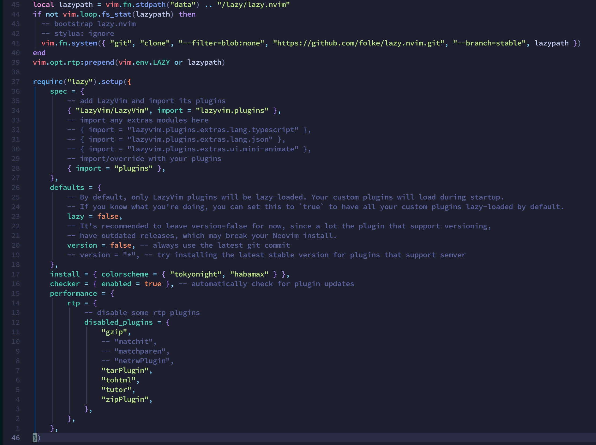

Before We Start
明明前一篇就講過怎麼做 neoVim 的 set up 了，為什麼現在又寫一篇呢？
確實，在上一篇中我已經做了算詳細的介紹了，不過就在我放寒假後多蓋了幾個套件的 config，整個 vim 又跟之前完全不一樣了
⋯⋯本來應該是這樣的，就因為我在 yt 上看了太多 NeoVim 相關的影片，yt 在上週末推了這部 devaslife 的影片給我
本來只是抱持著稍微看一下的心情點開，然後我就不小心把整個 config 又重新蓋了一遍⋯⋯
先上截圖


基礎的部分基本上跟上一篇差不多，或者是可以去看我目前的設定檔 repo
我這邊假設會看到這邊的人已經把 Nerd Fonts, zsh, iTerm 都弄好了，所以以下內容都只會提及與 NeoVim 直接相關的部分
另外這一篇文章有那麼億點點長，請見諒
Requirements
- NeoVim >= 0.9 (need to built with LuaJIT)
- LazyVim
- package for telescope.nvim
Install Package & LazyVim
首先當然是先安裝各種會用到的套件
1 | brew install neovim fd ripgrep |
另外我是先預載 folke 大神的 config，主要原因是他的 config 很適合 coding，而且基本上一個 IDE 必須有的功能他都弄好了，我們只要自己微調一點小地方就好
按照說明文件 中，我們可以用下面兩條指令來安裝 LazyVim
第二條是用來將 nvim 中的 .git 刪除，用來替代成你自己的 git repo
1 | git clone https://github.com/LazyVim/starter ~/.config/nvim |
然後就能用 nvim command 開始使用了，初次進入應該要花一陣子安裝 plugin
LazyVim
下載應該需要一段時間，在等待的同時簡單先提一下 LazyVim 相關的事情
About folke
首先，如前面所述，這是以 folke 大神為底的模板下去改的，並且新增了一些其他語言的支援，可以在 lazy.lua 裡面新增設定直接安裝相關 plugin
現在 folke 應該是社群中最活躍的貢獻者之一，這邊可以簡述一下他的事蹟（或是說寫過的 plugin？）：
- which-key.nvim，讓新手使用者可以快速的學習 vim 的快捷鍵
- tokeynight.nvim，就我所知這應該是第一個用 lua 寫的 colorscheme，同時帶領起社群中 colorscheme 反過來支援 plugin 的潮流
- noice.nvim，如果是喜歡將 cmdLine 隱藏的捧油一定接觸過 noice，這個 plugin 會在需要的時候居中顯示 cmdLine，並且用提示框的方式將 error message 顯示在畫面右上角
- lazy.nvim，最重大的貢獻，將 nvim plugin manager 往前推到下一個時代
About lazy.nvim
再來是這個套件使用的是同為 folke 大神（他真的很猛）寫的 lazy.nvim，相較於我之前用的 Packer 差不多，不過稍微好用一點：
- Lazy 不需要預先編譯，Packer 其實會編譯出一個暫存檔以供 nvim 使用
- Lazy 的整體大小更輕量
- Lazy 有完整的 UI 介面，我知道在 CLI 的 editor 裡面要求有好看的 UI 介面很怪但是（ry
- Lazy 會在 nvim 啟動時自動檢查是否有套件需要更新、config 中是否有以新增但尚未安裝的套件
這邊只有舉出幾個比較常見的差異，更詳細的內容可以參考這篇：使用lazy.nvim作为你的Neovim插件管理器
另外 Packer 也在去年八月宣布將暫停更新，請用戶們使用其他 plugin manager，看要用 Packer 的精神延續版本 pckr.nvim 或是 lazy.nvim
這邊我是選 lazy.nvim，主要原因是 lazy.nvim 較為穩定（pckr 還在發展階段），不過長遠來看使用 pckr 應該會是比較好的選則，pckr 正在緩慢的從 Lua 遷移至 Teal
如果要使用 Packer 或是 Lazy，需要將 config 用 lua 編寫，所以我在之前從 vim-plug 搬移到 Packer 時就已經重寫過一次 config 了
還好 Lazy 和 Packer 的語法大致相同，可以用:%s/foo/bar將部分關鍵字換成新的就好了
另外 Teal 之於 Lua，可以當作是 TypeScript 之於 JavaScript
我應該是在去年年底 12 月中的時候，在等我的 CVDL 作業 training 時將 Packer 換成 Lazy 了，真的不用做太多事情就能搬移了，相當舒服
LazyVim File Structure
LazyVim 的檔案結構基本上會長這樣
1 | nvim |
其中 lazy.lua 會是主要的設定，而與 plugin 相關的則是放在 plugins 中的檔案
可以有複數個檔案，每個檔案都會被 require 一次，其中每個檔案會 return 一個 table，代表是這個檔案要新增的 plugin 內容
一個 plugin 內容通常我會習慣這樣寫
1 | return { |
當然也可以同一個檔案內放複數 plugin 的 config
1 | return { |
這邊放幾個範例
1 | return { |
1 | return { |
另外不同套件會有不同的設定選項，可以參考預設的設定檔（通常 repo 會提供完整的 default config）調整，或是直接裝死用預設的
Editing Config
基本上大多數的設定我是照搬上面那一部影片的，不過影片本身有一個多小時，這邊就對於每個有動到的部分提一下做了哪些事情好了
Set tab size

我做的第一件事情，是將 tab size 改成 4 個空白
有部分歐洲 coder 比較喜歡用 2 個空白（Folke 是很標準的瑞典文名字，看 folke 的照片應該也是北歐人），不過我還是習慣 4 個
需要編輯兩份檔案
首先是在 lua/config/options.lua 底部新增這幾條設定
1 | vim.o.tabstop = 4 -- A TAB character looks like 4 spaces |
然後是去 stylua.toml 改成這樣
1 | indent_type = "Tabs" |
重啟 nvim 之後應該就能看到改變了
General Key Mapping
接著先設定一下通用的 key mapping，主要放在 lua/config/keymaps.lua，個別針對不同 plugin 的晚點再一起弄
主要是將 Ctrl + q 設定成退出 nvim、Ctrl + s 作為存檔
+, - 用來做數值的加減
te 和 Tab 設定為不同 Tab 切換
ss, sv 作為 split 和 vsplit
1 | local keymap = vim.keymap |
順便提一下，LazyVim 的 leader 預設為空白鍵 space
對於 leader 不了用途的，可以參考這篇文章：VIM学习笔记 前缀键(leader)
Color Theme
接著先設定個 Color Theme，這邊我也是選擇用 Solarized-Osaka，替代掉預設的 Tokeynight
Tokeynight 也很好看，不過我之前已經用這個配色快兩年了有點膩，想換個口味
1 | return { |
同時到 lua/config/lazy.nvim 第 12 行，加入一項 opts
1 | { "LazyVim/LazyVim", import = "lazyvim.plugins", opts = { colorscheme = "solarized-osaka", } }, |
另外其他 LazyVim 預設的 key mapping 可以到他們的網頁查看
Fix Conceallevel for Json
另外用預設的 set up 時，json 中文件的雙引號會被消掉，只有在游標移動到該行時才會顯示
為了減少漏看的麻煩，這邊在 lua/config/autocmds.lua 中，加入以下設定取消這項功能
1 | vim.api.nvim_create_autocmd("InsertLeave", { |
Install Extras
再來是新增一些 LazyVim 提供的 extra plugins，這邊我安裝了幾個語言插件
另外還有提供如 TabNine, Copilot 之類的功能，有使用需求的可以直接在這邊安裝
將需要安裝的 extra 新增在 lua/config/lazy.lua 中的 spec 裡面
1 | -- import any extras modules here |
其餘的 extras 請參考網頁
LSP setup
因為前面新增了一些語言相關的 extras，在重開 nvim 的時候除了安裝這些東西，也記得要開 Mason 確認這些 lsp 是否安裝完成
LSP
既然說到 LSP 了，這邊也提一下 LSP 是什麼
Language Server Protocol（語言服務器協議，LSP）是 Microsoft 於 2016 年提出的一套統一通訊協議，該協議定義了 IDE 和語言服務器之間的溝通
語言服務器則是用來提供 auto complete, definition query 等功能，藉由即時分析當前檔案提供服務
像是 Visual Studio 或 Eclipse 等都是利用語言服務器來提供 auto complete 的
例如給 C/C++ 用的 clangd、給 Python 用的 pyright
而在有統一的協定之前，各個語言服務器會是單獨對每個編輯器做不同的設定，如 clangd 對 vim 的設定就無法套用至 Visual Sutdio Code 上（因為編輯器內部的規範都不同）
這時 LSP 變誕生了，藉由 LSP 這個中間橋樑，實現了不同語言服務器和編輯器之間的統一，這項協議的好處是以後各個語言服務器只需要應對 LSP 就好，同理不同編輯器只要應對 LSP 傳來的資訊就好
mason
而 mason.nvim 就是 nvim 的 LSP manager，安裝後可使用 :Mason command 來管理不同的 LS, DAP, formatter 等套件，在 LazyVim 中預設為 <leader>cm
這邊既然提到 LSP 了，就順便設定吧
1 | return { |
mason.nvim 和 mason-lspconfig.nvim 用來管理哪些 LSP 是一定要安裝的
因為多數的 lsp 我都用預設的 config，所以就沒有多做設定了
none-ls
none-ls 是一個提供本身無 LS 的來源接上 LSP，提供類似 auto complete 的功能（按照之前出現過的字之類的）
因為 nvim 本身並無提提供此功能，因此需要另外安裝 plugin
1 | return { |
Editor: telescope & flash
接著來設定 editor 相關的內容，telescope.nvim 是一個內文模糊搜尋的 plugin，因為模組化的設計，可以輕鬆的字定義多數功能
然後 devaslife 這位老兄的 config 有那麼億點長，我也還沒完全熟悉這些操作
1 | return { |
同時我順便把 flash.nvim disable 掉了，因為我不是很喜歡這個動畫功能
UI
設定完 editor 的東西，現在換來處理 UI
Noice
沒錯，前面提到的 Noice 我們也會做點設定
用到現在應該有注意到，LazyVim 是沒有 cmdLine 的，並且也有提供 Noice 的設定
不過在 LazyVim 的設定下，即便回傳的內容是空的依然會觸發 Noice，所以這邊做一點設定，將 Noice 在無可用內容時會將這個提醒擋掉不會輸出
同時用 nvim-notify 設定所有提醒會持續 5000ms
1 | return { |
incline
incline 是一個方便顯示不同分割畫面中檔案名稱的 plugins
這樣在一個畫面中有不同檔案時可以比較容易看到檔案名稱，不用將游標移動到那一個分割區
1 | return { |
這邊改了一下顏色的設定，同時將如果游標停在第一行時會隱藏檔名
bufferline
bufferline 是將 buffer 中的分頁顯示類似 VSCode 這些 IDE 的樣子，這邊也是簡單的設定一下
因為不喜歡關閉檔案的 icon，所以把他們都關掉了
1 | return { |
lualine
lualine 是一個讓狀態列更好看的 plugin，LazyVim 預設就有了
我多加了一項顯示 LSP 的功能，其餘基本上是直接搬 lualine 的預設
1 | return { |
dashboard
最後關於 UI 的設定是 dashboard，預設是顯示一個 LazyVim 的 ASCII art
這邊我改成用自己的 username，可以到這個網站做一個自己的 ASCII art
1 | return { |
treesitter
treesitter 是一個 highlighting 用的插件，支援多種語言，讓程式碼便的更好讀
這邊加入了幾個我比較常用的語言，確保他們都有安裝，然後將 mdx 是為 md
1 | return { |
Tagbar
tagbar 是一個我很喜歡的 plugin，用途是將這一份 code 中的 function 和 global variable 顯示出來，並且可以直接跳到該項目的 define 位置
基本上我沒有做任何的設定，對我來說就只是一個顯示我有哪些 diginition，我沒有很 care 他的樣字或是功能XD
1 | return { |
vim-tmux-navigator
在各個分割畫面中，可以用 Ctrl + [h, j, k, l] 來做切換對應位置的畫面
另外我平常的開發環境習慣用 tmux 來管理各種工作，如果可以直跟用相同的快捷鍵切換再好不過了，不然兩個的 prefix 不同很容易按錯
1 | return { |
另外要注意一下，在 tmux 那邊也記得要安裝這個套件
template
最後的最後是 tamplete，因為我目前寫 C++ 幾乎都還是要寫競程的內容，有個 default code 會舒服一些，也比較符合我之前寫競賽 code 的習慣
因此這邊用 new-file-template 來完成這件事
其本身的 config 是沒有 lazy load 的，因為我並不是無時無刻都要寫新 code，甚至現在有很多時間都不是在寫 C++，因此加上 lazy load
目前用起來沒有什麼大問題，不過 default 沒辦法加上 #define endl '\n' 有點討厭，因為 \n 會被 lua 視為換行，改成用 \\n 也是有一樣的問題
以後要習慣敲 '\n' 而不是 endl 了 QAQ
1 | return { |
Epilogue
大致上就這些，未來不確定會不會加入更多的 plugin（我覺得應該是會啦XD），也不確定會不會自己寫
等哪天有這些想法應該也會丟上來水一篇文章（？
在撰文當下的這幾天，我幾乎都在各種的蓋 config
像是我把 zsh 和 tmux 的 config 重建了一次，不過都是很基礎的設定，如果想要看我做了什麼可以到我的 dotfiles 看看
基本上就是重改，把一些多餘的 config 拔掉，然後換新的 theme setu，就這樣
本來差點還要蓋一個新的 window manager，不過蓋到一半要測試的時候感覺卡卡的很怪，不知道是不是不支援 HiDIP 還是因為我的 HiDPI 是硬開的（我的外接螢幕解析度只有 2k，macOS 本身是不支援 HiDPI 的），所以蓋到一半只能忍痛刪掉
總之最近的我是 config 狂人（？），各種蓋 config，還順手寫了篇文章XD
我甚至還有一天本來的預計進度是要把之前暑假寫到一半的 side project 繼續寫完，或是做點 study 研究要加入什麼新的 feature
⋯⋯然後我就跑回去繼續蓋 config 了，我也不知道為什麼，我在幹嘛XD
這應該是我有史以來寫過最長的文章了（？），md 原始檔有 900 多行
雖然其中應該有 400 行以上都是複製貼上的 code，另外還有 50 行左右的空行，但還是一個小小的里程碑
不知道以後有沒有機會寫出破 1000 行的文章XD